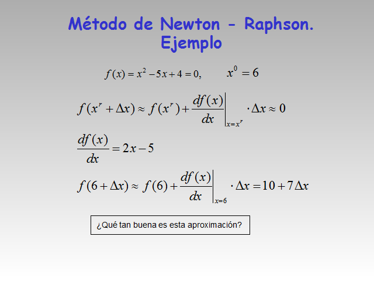
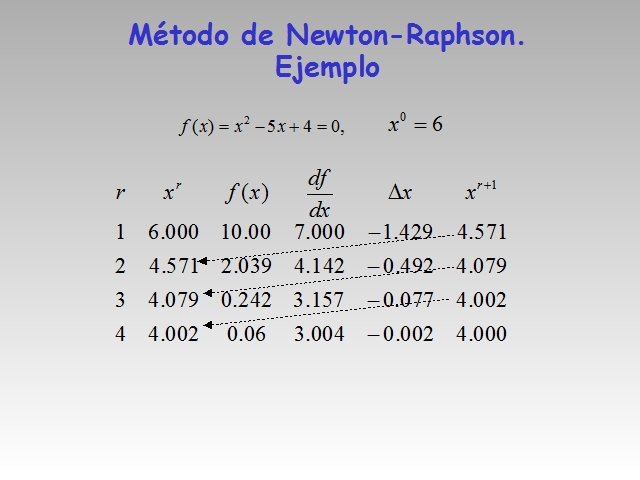
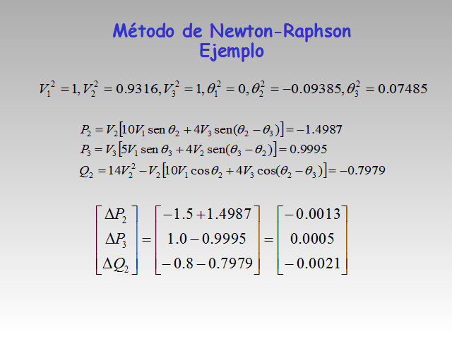
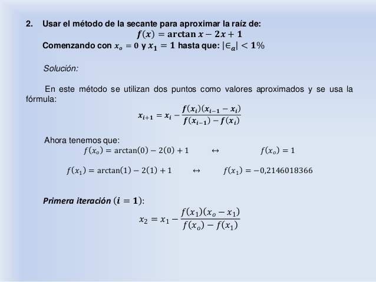
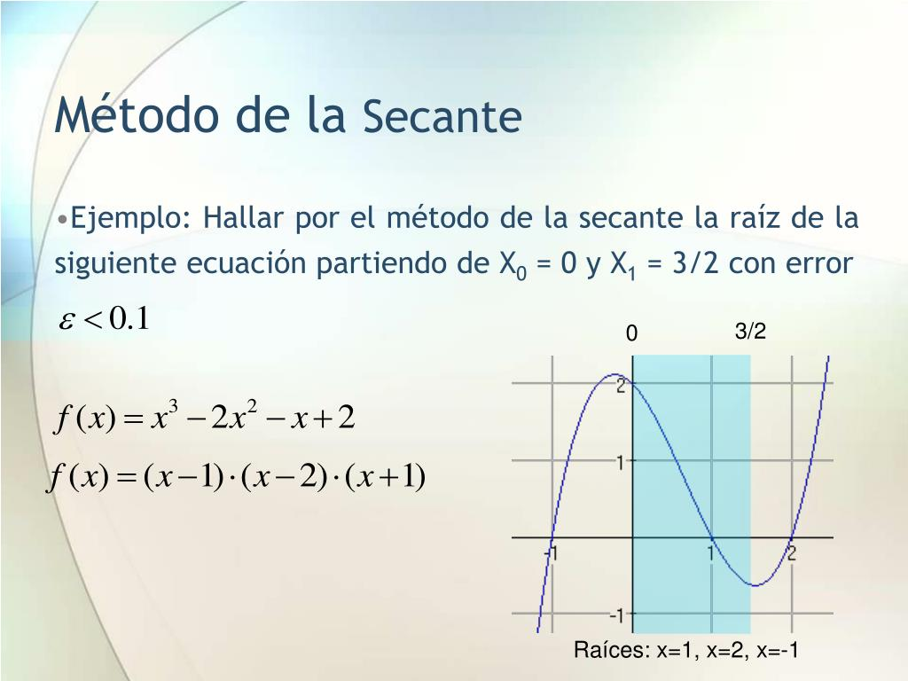
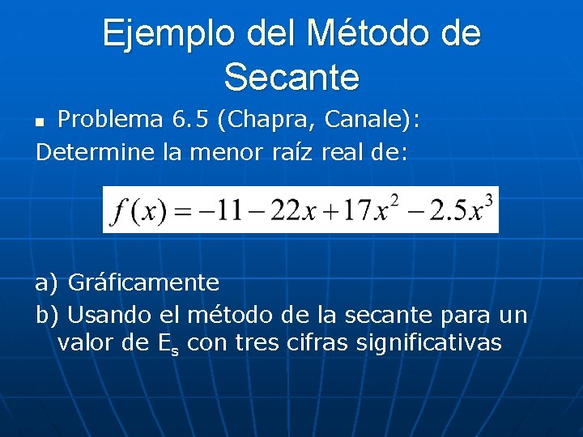
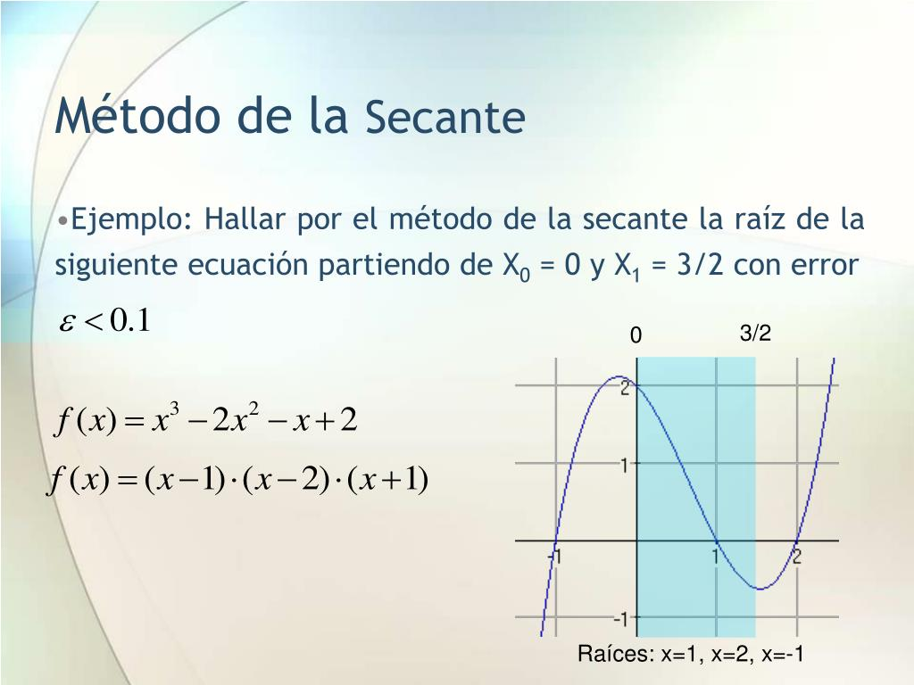
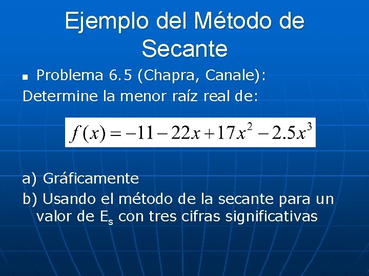

clear
clc
i= 1;
disp('========Newton-Raphson============')
x=input(' Primer Punto xi: ');
tol=input(' Tolerancia: ');
e = 1;
max1=100;
disp(' ')
disp('" ==================Tabla de resultados =============" ')
disp(' Iteracion Po P f(p) Error ')v
while e > tol
f= 2^x-6*cos(x);
df =log(2)*2^x+6*sin(x);
xn = x-f/df;
e = abs((xn-x)/xn);
fprintf('\t\t%d\t\t\t%f\t\t%f\t\t%f\t\t\t\t%f\n',i,x,xn,f,e)
x = xn;
i = i + 1;
end
Introducción a Metodos Numéricos
Un método numérico de resolución de un determinado problema es: un conjunto de reglas que permite la obtención mediante un número finito de operaciones elementales, de un resultado que se aproxima de alguna manera a la solución del problema en cuestión.
Hoy en día, gran parte de la tecnología actual depende de la solución de modelos matemáticos, desde la programación empotrada de una calculadora científica y el cálculo estructural de un edificio multinivel con estructuras de acero, hasta el diseño y simulación de aeronaves y vuelos espaciales. La solución de un modelo matemático relativamente sencillo puede obtenerse de manera analítica.
En ocasiones, para la gran mayoría de los modelos matemáticos del mundo real, las soluciones analíticas pueden no existir o ser extremadamente complejas, por lo cual se recurre a métodos numéricos que aproximen las soluciones dentro de ciertos márgenes de tolerancia.

Metodo de Bisección
Qué es el método de bisección
Como anticipamos en la sección anterior, lo primero que debemos hacer es intentar responder esta pregunta. También llamado “Teorema de Bolzano”, sirve para detectar una raíz real dentro de un intervalo de una determinada ecuación. En realidad es bastante sencillo de entender, aunque el proceso dependerá de la exactitud del resultado que se pretenda alcanzar.
Mientras más exacto deba ser el resultado esperado, mayor cantidad de cálculos es preciso hacer. No obstante no te alarmes, pues el método de bisección no es tan complejo como parece. De hecho, es la vía más práctica para encontrar solución a ecuaciones de tipo algebraico y trascendente, como así también un excelente complemento del conocido método gráfico.
Pero expliquemos en qué casos se debe aplicar, concretamente, el teorema de Bolzano. Este procedimiento postula las condiciones necesarias para que exista, por lo menos, un 0 en una función continua. De acuerdo con la técnica, si f (x) resulta continua dentro del intervalo [a, b], con f (a)∙ f (b) <0 (menor a cero), entonces podemos deducir que como mínimo existe al menos un c ∈] a, b [ tal que f(c) = 0.
Vamos a desenredar este postulado. El método de bisección sostiene que si te encuentras frente a una función real continua (del tipo y = f (x) ) dentro del intervalo [a, b], en el cual el signo de la función en el punto “a” difiere del signo que se presenta en el punto “b” del mismo intervalo, entonces se supone que como mínimo va a darse un c ∈ [a, b], de modo que f (c)=0, resultado que muestra la raíz buscada.
Origen
El método de bisección está basado en dos teoremas, el teorema de Bernard Bolzano (quien demostró el método por primera vez) y el teorema del valor medio, posteriormente el matemático Augustin-Louis Cauchy da un asegunda demostración el 1821.
%MARIANO GALVEZ GUATEMALA
%INGENIERIA EN SISTEMAS
%ANALISIS NUMERICO
clear all;
clc;
disp('INGRESAR LA FUNCION, INTERVALO DE EVALUACION Y PORCENTAJE DE ERROR');
Y= input('ingrese la funcion: ','s')
Xa= input('ingrese el intervalo inferior: ');
Xb= input('ingrese el intervalo superiror: ');
error= input('ingrese el porcentaje de error: ');
x= Xa;
Ya= eval(Y);
x= Xb;
Yb= eval(Y);
if(Ya*Yb)>0
fprintf('\n\n no existe raiz en el intervalo [Xa,Xb]\n\n');
fprintf('ingrese un nuevo intervalo o una nueva funcion');
end
fprintf('\n\n');
disp(' N Xa Xb Xr F(Xa) F(Xb) F(Xr) error ');
disp('|----|------|------|-----|-------|---------|--------|---------|');
Xant=0;
N=0;
while N<50
Xr=(Xa+Xb)/2;
Xact=Xr;
x=Xr;
Yr= eval(Y);
Ea= abs((Xact-Xant)/Xact)*100;
ds_i=fprintf('%4d %17.8g %17.8g %17.8g %17.8g %17.8g %17.8g 10.5g', N, Xa, Xb, Xr, Ya, Yb, Ea);
disp(ds_i);
if Ea<error
fprintf('\n\n La raiz exacta es: %d', Xr);
fprintf('\n\n numero de iteraciones: %d \n\n', N);
break
end
if(Ya*Yr)<0
Xb=Xr;
elseif (Ya*Yr)==0
fprintf('\n\n la raiz exacta es: %17.8g',Xr);
fprintf('\n\n el numero de iteraciones fue %d', N);
break
else
Xa=Xr;
end
Xant=Xr;
N=N+1;
end
EJEMPLO 1 Encontrar la raíz de f(x) = x^10 – 1 utilizando el Método de la Bisección con a = 0; b = 1.3; Tol = 0.01

Gráfico de la Función

EJEMPLO 2 Resolver f(x)=e^-x+4x^3-5; a=1; b=2; Tol=0.001 utilizando el método de la Bisección.

Gráfico de la Función

EJEMPLO 3 Resolver f(x)=3x+sen(x)-e; a=0; b=1; Tol=0.001 utilizando el método de la Bisección.

Gráfico de la Función

Pasos Metodo de Bisección
Sabemos que hablar de puras teorías sin mostrar la aplicación concreta de un método en particular, resulta en vano. Es así como en el presente apartado te mostraremos de qué forma aplicar el método de bisección paso a paso. Si cumples concienzudamente con cada una de estas etapas, seguramente lograrás llegar a un resultado preciso.
1. Supón que te encuentras delante de una ecuación del tipo f (x) = 0.
2. Para establecer cuál es la raíz existente en el intervalo [a, b], divide dicho intervalo al medio y nombra como “m” al punto en el que m = a + b2.
3. Ten en cuenta estas posibilidades:
Si la función f (m) = 0, quiere decir que m es la raíz que querías encontrar.
Si las funciones f (a) y f (m) presentan signos distintos, entonces la raíz a buscar se localiza en el intervalo [a, m].
Si las funciones f (m) y f (b) muestran signos distintos, quiere decir que la raíz buscada está en el intervalo [m, b].
4. Divide al medio el nuevo intervalo que ya posee la raíz y aplica el mismo procedimiento que ya vimos.
5. Al avanzar con tal proceso, establece que la raíz se halla en un intervalo tan breve como quieras y así obtendrás una aproximación de la raíz que quieres encontrar.
6. Fíjate en que irás calculando una serie de intervalos más y más pequeños. Los mismos tomarán la forma [a1, b1], [a2, b2]… [an, bn], y así sucesivamente; de modo que f (an)∙ f ( bn)→ 0, y así bn−an = 12n (b−a).
7. Los puntos extremos del intervalo (a1, a2, etc.) formarán una sucesión progresiva, mientras que a su vez los puntos b1, b2, etc. formarán una sucesión decreciente. En ambos casos el proceso está acotado por el límite (igual para los dos) que representa la raíz buscada.
8. Puedes seguir con este procedimiento hasta llegar a |bn−an| < ∈, lo cual sirve para un valor ∈ ya determinado. Aquí se hace evidente que la aplicación del método de bisección otorga la precisión que hace falta para encontrar una raíz bien definida.
Hasta aquí hemos consignado los pasos esenciales para aplicar la técnica de resolución que nos ocupa; no obstante, es necesario apuntar que también se debe utilizar otro teorema que determinará la cota de error (el mínimo error esperado) en el cálculo del método.
Si tienes la función continua f(x) en el intervalo [a, b], de tal modo que f (a) ∙ f (b) <0, el método de bisección provoca una sucesión del tipo {pn}, convergente a una raíz p de forma que |pn−p| ≤ b − a2n, n≥1. En este caso, la determinación de la máxima cantidad de iteraciones requiere la aplicación de una fórmula como b − a2n < ε.
Una vez que hayas aplicado todos los pasos y obtenido la respuesta que querías, te aconsejamos graficar la ecuación por medio de un graficador online de funciones. Se trata de una herramienta totalmente gratis y muy rápida, que te permitirá obtener una versión visual de la expresión matemática que estás calculando.
Puedes guardar el resultado en distintos formatos de archivos de imagen o imprimir una copia para anexarla a un trabajo práctico o informe. ¡Resultados prolijos y totalmente garantizados! Hacer tu tarea o encarar un nuevo proyecto de investigación nunca ha sido tan sencillo como ahora.
Ventajas y desventajas del método de bisección
Todos los métodos que el hombre ha desarrollado son eso, técnicas que ha concebido la mente humana y, por ende, cabe en ellas la imperfección. En este sentido, el método de bisección no es infalible y así presenta algunas desventajas que creemos necesario que conozcas. Asimismo, tiene ciertas cualidades que lo hacen elegible frente a otros métodos de resolución de problemas matemáticos.
v
En fin, queremos mostrarte ambas caras de la moneda para que tú sepas decidir qué es lo que más te conviene hacer a la hora de resolver tus ecuaciones.
Ventajas
- Siempre resulta convergente.
- Resulta óptimo para dar respuesta a una ecuación del tipo f (x) = 0 cuando desconocemos totalmente f, salvo el cálculo de su signo.
- Necesita que f sea de carácter continuo en el intervalo previsto.
- Permite establecer cierto límite de error.
- Es bastante sencillo de implementar.
- Es fácil de aprender y permite dar respuesta a ecuaciones matemáticas simples.

Desventajas
- Converge de forma lenta.
- Brinda la posibilidad de hallar una única raíz aunque halla otras en el intervalo.
- En ocasiones, la delimitación del intervalo primero no es tan sencilla.
- No siempre es evidente el criterio de fin para el procedimiento iterativo.
- No sirve para establecer raíces de naturaleza compleja.
- Es poco generalizable a dimensiones matemáticas mayores.
Ya ves que, en realidad, no todo son rosas en el camino del descubrimiento y aplicación de nuevas fórmulas. Estas pueden dar resultado o no dependiendo de las características y complejidad de la ecuación matemática que pongas en juego. De cualquier manera, creemos que el método de bisección es una técnica asequible para responder incógnitas de ecuaciones lineales sin complicarse tanto la vida.
Metodo Newton Raphson
Este método es uno de los mas utilizados para localizar raíces ya que en general es muy eficiente y siempre converge para una función polinomial. Se requiere que las funciones sean diferenciables, y por tanto, continuas, para poder aplicar este método. Se debe partir de un valor inicial para la raíz: xi , este puede ser cualquier valor, el método convergirá a la raíz mas cercana. Si se extiende una tangente desde el punto (xi,f(xi)) , el punto donde esta tangente cruza al eje x representa una aproximación mejorada de la raíz.

La fórmula de Newton-Raphson se deduce a partir de la fórmula de la pendiente de una recta. Pendiente de una recta:


Origen El método de Newton-Raphson es llamado así por la razón de que el matemático inglés Joseph Raphson (contemporáneo de Newton) se hizo miembro de la Royal Society en 1691 por su libro aequationum universalis Análisis que publico en 1690 y el cual contenía este método para aproximar raíces.



Ventajas y desventajas del método de Newton-Raphson
Ventajas- Ventajas: Este método puede ser rápido dadas las condiciones. Es eficiente en ecuaciones no lineales.
- Eficiente en ecuaciones no lineales, converge rápidamente en las condiciones apropiadas y proporciona una buena precisión
- Desventajas: Requiere de la primera derivada. Pudiera no convergir dependiendo de la función. Es ineficiente en ecuaciones lineales. Es muy lenta dependiendo de la complejidad de las derivadas.
- No existe un criterio general de convergencia.Lenta convergencia dependiendo de la naturaleza de la función. Requiere conocer la primera derivada
Metodo de la Secante
En análisis numérico el método de la secante es un método para encontrar los ceros de una función de forma iterativa.
Es una variación del método de Newton-Raphson donde en vez de calcular la derivada de la función en el punto de estudio, teniendo en mente la definición de derivada, se aproxima la pendiente a la recta que une la función evaluada en el punto de estudio y en el punto de la iteración anterior. Este método es de especial interés cuando el coste computacional de derivar la función de estudio y evaluarla es demasiado elevado, por lo que el método de Newton no resulta atractivo.
En otras palabras, el método de la secante es un algoritmo de la raíz de investigación que utiliza una serie de raíces de las líneas secantes para aproximar mejor la raíz de una función f. El método de la secante se puede considerar como una aproximación en diferencias finitas del método de Newton-Raphson. Sin embargo, este método fue desarrollado independientemente de este último.
El método se define por la relación de recurrencia:

Derivación del método El método se basa en obtener la ecuación de la recta que pasa por los puntos (xn−1, f(xn−1)) y (xn, f(xn)). A dicha recta se le llama secante por cortar la gráfica de la función. En la imagen de arriba a la derecha se toman los puntos iniciales x0 y x1, se construye una línea por los puntos (x0, f(x0)) y (x1, f(x1)). En forma punto-pendiente, esta línea tiene la ecuación mostrada anteriormente. Posteriormente se escoge como siguiente elemento de la relación de recurrencia, xn+1, la intersección de la recta secante con el eje de abscisas obteniendo la fórmula, y un nuevo valor. Seguimos este proceso, hasta llegar a un nivel suficientemente alto de precisión (una diferencia lo suficientemente pequeñas entre xn y xn-1).
Origen La historia del descubrimiento de la solución algebraica de la cubica enfrento a dos grandes rivales italianos: Cardano y Tartaglia hacia 1540, y Ferrari, alumno y secretario de Cardano resolvió en 1545 la ecuación de cuarto grado.
//Método de la secante
//Autor: Shernandez
#include <iostream>
#include <cmath>
using namespace std;
double x0, x1, xi, error;
//Variable que guarda las iteraciones.
int iteraciones = 0;
//Método que representa la evaluación de la función.
double funcion(double x) {
(alguna función)
}
//Función que calcula el error
double errorAbsoluto(double viejo, double nuevo) {
return abs((nuevo - viejo) / nuevo) * 100;
}
//Método de la secante: acepta dos valores iniciales y un error.
double Secante(double x0, double x1, double exactitud) {
do {
//Calcula el nuevo punto y el error.
xi = x1 - ((funcion(x1)*(x0-x1)) / (funcion(x0)-funcion(x1)));
error = errorAbsoluto(x1, xi);
x0 = x1;
x1 = xi;
//Se suma una iteración.
iteraciones++;
//Todo lo hace mientras el error deseado no haya sido
//alcanzado todavía.
} while (error > exactitud);
//Regresa el último valor calculado.
return x1;
}
int main() {
//Llama al método de la secante con valores iniciales de
//0 y 1, y un error de 0.00001.
double res = Secante(0, 1, 0.00001);
cout << "La raiz es: " << res << "\n";
cout << "Iteraciones: " << iteraciones;
return 0;
}
clear
clc
format long
disp('========= METODO DE LA SECANTE ============')
cf= input('Ingrese la funcion: ');
f = inline(cf);
p0= input('Ingrese el primer valor: ');
p1= input('Ingrese el segundo valor: ');
TOL= input('Ingrese la tolerancia: ');
IT= input('Ingrese la iteracion maxima ha alzanzar: ');
%if f(p0)*f(p1)>0
% error('La funcion no tiene raices en el intervalo');
%end
fprintf(' i p0 p1 q0 q1 p f(p) error\n');
for i=2:IT
q0=f(p0);
q1=f(p1);
p = p1 -(p1-p0)*f(p1)/(f(p1)-f(p0));
p = p1-(q1*(p1-p0)/(q1-q0));
error = abs((p-p0)/p);
fp=f(p);
fprintf('%3.0f %12.12f %12.12f %12.12f %12.12f %12.12f %12.12f %12.12f\n',i,p0,p1,q0,q1,p,f(p),error);
if error menor TOL
fprintf('El valor de la aproximacion es: %12.12f\n',p);
disp('Iteraciones: '); disp(i);
return
else
p0=p1;
q0=q1;
p1=p;
q1=fp;
end
end
fprintf('Se alcanzo el numero maximo de iteraciones:\n');





Ventajas y desventajas del método de Secante
Ventajas- Se puede obtener cuando la ecuación es demasiado compleja para obtener una derivada.
- La velocidad de convergencia es mas lenta que la de Newton-Raphson. No se asegura que la primera aproximación es cercana a la raíz que pudiera ser indice de divergencia.
Porqué del motivo de incluir los métodos numéricos seleccionados en mi investigación
Porqué? porque cada uno tiene su tipo , requisitos para buen funcionamiento, riegos, convergencia sus ventajas y desventajas, tolerancias, tipo de raices y sobre todo cuantas raices se encuentra en cada uno... dicha tabla se representa todo:
| Bisección | Newton-Raphson | Secante | |
| Tipo | Cerrado | Abierto | Abierto |
| Requisitos para buen funcionamiento | La función debe ser continua, lineal, que cuente con mínimo una raíz y no se indetermine en ningún punto. El intervalo inicial [a,b] debe cumplir con la propiedad f(a) * f(b) < 0 | La función debe ser al menos dos veces derivable, la segunda derivada debe ser continua con el mismo signo y la primera derivada diferente a cero. | Es necesario conocer los valores Xi y Xi-1 para poder sacar el valor de Xi+1.
Es necesario dar dos valores iniciales que no se encuentren afectados por asíntotas, puntos de inflexión, mínimos o máximos locales y pendientes que se aproximan a cero. |
| Riesgos | Comportamiento inestable, lenta convergencia y alto riesgo de divergencia | No tiene un criterio general de convergencia.
Lenta convergencia en algunos casos debido a la naturaleza de la función. Depende de la primera derivada de la función en el punto. |
No se asegura si la primera aproximación a la raíz no es lo suficientemente cercana a ella, ni cuando es raíz múltiple. |
| Convergencia | Lenta pero posible si las funciones respetan el criterio de continuidad, evitan la indeterminación y se siga la condición de f(a) x f(b) < 0 en los intervalos | Lenta debido a la naturaleza de la función. Cuando un punto de inflexión f”(x) = 0, ocurre en la vecindad de una raíz, el método oscila alrededor de un mínimo o máximo local o se encuentran pendientes cercanas a cero. | Convergencia superlineal inferior a la del método de Newton-Raphson. |
| Ventajas y desventajas | V: Robusto y simple D: Convergencia lenta y comportamiento inestable |
V: Eficiente en ecuaciones no lineales, converge rápidamente en las condiciones apropiadas y proporciona una buena precisión D:No existe un criterio general de convergencia.Lenta convergencia dependiendo de la naturaleza de la función. Requiere conocer la primera derivada |
V: Evita la complejidad de las derivadas, es independiente de los signos de la función. D: Menor velocidad que otros métodos. No se asegura la primera aproximación a la raíz. |
| Tolerancia al error | los errores disminuyen entre cada iteración, pero el error relativo porcentual verdadero es el más alto de los demás
|
Error proporcional al cuadrado del error anterior
|
|
| Tipo de raíces que encuentra | Raíces reales | Raíces reales | Raíces reales |
| Cuántas raíces encuentra el método | 1 | 1 (a menos de que se trate del método modificado para raíces múltiples) | 1 (a menos de que se trate del método modificado para raíces múltiples) |